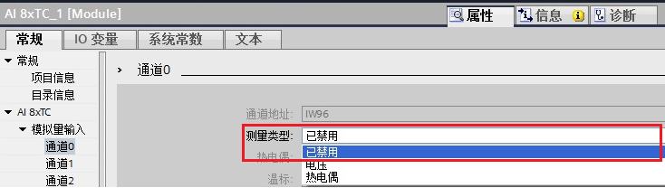
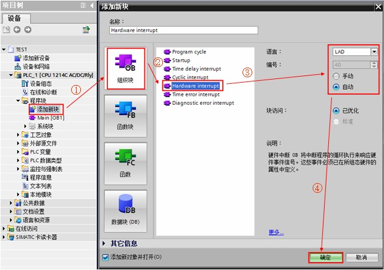
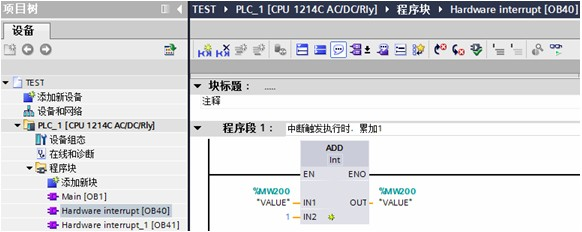
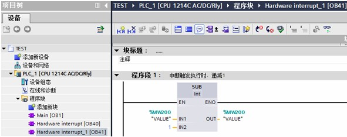
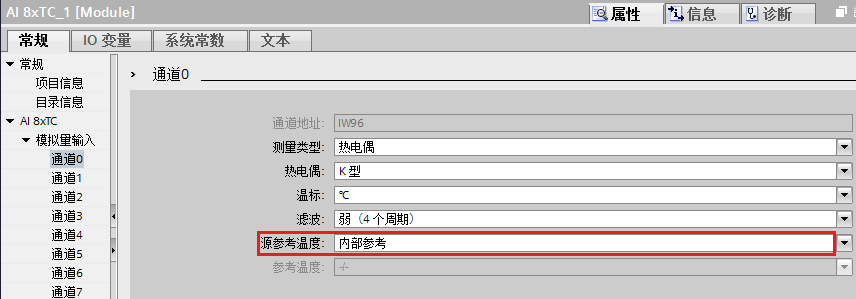
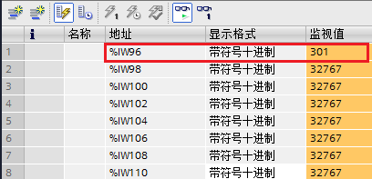
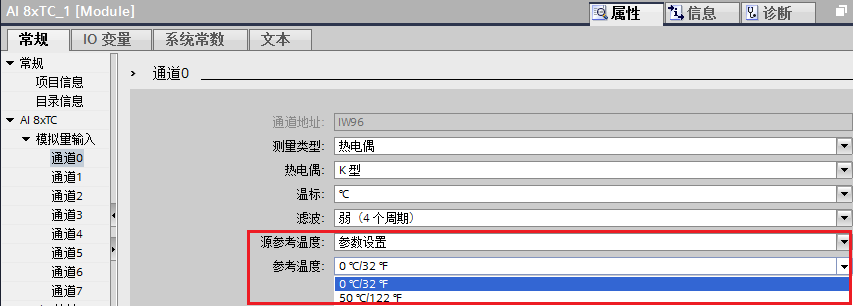
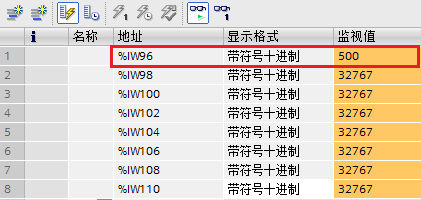
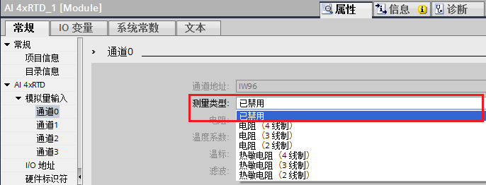

常见问题 FAQ¶
模拟量输入输出模块常见问题¶
 S7-1200 模拟量模块的输入/输出阻抗指标是多少？
S7-1200 模拟量模块的输入/输出阻抗指标是多少？
**答：**详情可见《 S7-1200 系统手册 》的附录A 。
CPU 模拟量输入阻抗：
电压型信号：≥ 100 KΩ
信号模板模拟量输入阻抗：
电压型信号：≥ 9 MΩ
电流型信号：250Ω
信号模板及信号板模拟量输出阻抗：
电压型信号：≥ 1000 Ω
电流型信号：≤ 600 Ω
S7-1200 模拟量模块的输入/输出信号传输距离？
**答：**模拟量模块的输入/输出信号传输距离，从接线方面考虑，使用双绞屏蔽电缆最大可以连接 100 m 的长度， 还要考虑现场电磁干扰等现实状况。一般电压信号易受现场干扰且长距离传输也会造成信号的衰减，建议尽量近距离传输；电流信号相比电压信号抗干扰能力好些， 相对电压信号传输距离可适当加长。
S7-1200 模拟量模块的输入过冲及溢出数值分别是多少？
对于电压测量范围，S7-1200 模拟量模块的电压输入值与模块通道显示数值对应关系如下表 1 所示：
过冲范围为 27649至32511；下冲范围为-27649至-32512
上溢范围为 32512至32767，下溢范围为 -32513至-32768
系统 |
电压测量范围 |
|||||
十进制 |
十六进制 |
±10V |
±5V |
±2.5V |
±1.25V |
|
32767 |
7FFF |
11.851V |
5.926V |
2.963V |
1.481V |
上溢 |
32512 |
7F00 |
|||||
32511 |
7EFF |
11.759V |
5.879V |
2.940V |
1.470V |
过冲范围 |
27649 |
6C01 |
|||||
27648 |
6C00 |
10V |
5V |
2.5V |
1.250V |
额定范围 |
20736 |
5100 |
7.5V |
3.75V |
1.875V |
0.938V |
|
1 |
1 |
361.7μV |
180.8μV |
90.4μV |
45.2μV |
|
0 |
0 |
0V |
0V |
0V |
0V |
|
-1 |
FFFF |
|||||
-20736 |
AF00 |
-7.5V |
-3.75V |
-1.875V |
-0.938V |
|
-27648 |
9400 |
-10V |
-5V |
-2.5V |
-1.250V |
|
-27649 |
93FF |
下冲范围 |
||||
-32512 |
8100 |
-11.759V |
-5.879V |
-2.940V |
-1.470V |
|
-32513 |
80FF |
下溢 |
||||
-32768 |
8000 |
-11.851V |
-5.926V |
-2.963V |
-1.481V |
表 1 .SM1231 电压测量范围数值
对于电流测量范围，S7-1200 模拟量模块的电流输入值与模块通道显示数值对应关系如下表 2 所示：
过冲范围为 27649至32511；下冲范围为-1至-4864
上溢范围为 32512至32767，下溢范围为 -4865至-32768
 注意：当开路时，模拟量模块通道显示数值是32767。
注意：当开路时，模拟量模块通道显示数值是32767。
系统 |
电流测量范围 |
|||
十进制 |
十六进制 |
0mA到20mA |
4mA到20mA |
|
32767 |
7FFF |
23.70mA |
22.96mA |
上溢 |
32512 |
7F00 |
|||
32511 |
7EFF |
23.52mA |
22.81mA |
过冲范围 |
27649 |
6C01 |
|||
27648 |
6C00 |
20mA |
20mA |
额定范围 |
20736 |
5100 |
15mA |
16mA |
|
1 |
1 |
723.4nA |
4mA+578.7nA |
|
0 |
0 |
0mA |
4mA |
|
-1 |
FFFF |
下冲范围 |
||
-4864 |
8100 |
-3.52mA |
1.185mA |
|
-4865 |
80FF |
下溢 |
||
-32768 |
8000 |
表 2 .SM1231 电流测量范围数值
SM1231 模拟量输入模块未使用通道如何处理？
答：应将未使用的电压输入通道短路。使用导线短接通道的正负两个端子，例如短接 0 通道的 0+ 和 0- 端子；
应将未使用的电流输入通道设置在 0 至 20 mA 范围。
热电偶模块常见问题¶
S7-1200 TC 信号阻抗指标是多少？
**答：**SM1231 TC 和 SB1231 TC 阻抗参数一样。
TC 信号：≥ 10 MΩ
S7-1200 TC 信号传输距离？
**答：**SM1231 TC 和 SB1231 TC 信号传输距离参数一样。
TC 信号：≤ 100 m；要求线路阻抗 ≤ 100 Ω
SM1231 TC 模块未使用通道如何处理？
答：对于 SM1231 TC 模块未使用通道， 可以采用以下方法做处理：
方法一：对该通道短路。使用导线短接通道的正负两个端子，例如短接 0 通道的 0+ 和 0- 端子；
方法二：对该通道禁用。在模块的“属性-常规”，对测量类型选择“已禁用”。 如下图 1 所示组态：

图 1. SM1231 TC 模块禁用未使用通道
注意：不能将所有通道都选择“已禁用”。
SM1231 TC 模块在通道测量类型选择“已禁用”或“热电偶”时，通道指示灯和数值分别是什么状态？
（1）通道测量类型“已禁用”：该通道的指示灯不亮，通道读数为最大值 32767；
（2）通道测量类型“热电偶”，未使能“启用断路诊断”，如下图 2 所示：当通道接线存在开路，通道读数为随机值；

图 2.未使能“启用断路诊断”
（3）通道测量类型“热电偶”，使能“启用断路诊断”：当通道接线存在开路，此时模板 DIAG 指示灯红色闪烁，对应的通道的灯也红色闪烁， CPU ERROR 灯也红色闪烁； 同时诊断缓冲区报错“断路”，通道读数为最大值 32767；如下图 3， 图 4 所示：

图 3.使能“启用断路诊断”

图 4.诊断缓冲区事件“断路”
（4）通道测量类型“热电偶”，通道短接，设为“内部参考”，则读到的数值/10为模板的内部温度值（例如：模块内部温度值为30.1℃， 读到数值为301）；如下图 5，图 6 所示：

图 5.内部参考

图 6. SM 1231 模块内部温度值
（5）通道测量类型“热电偶”，通道短接，设为“参数设置”，则读数为设定的温度值*10 （例如：50℃，读到数值为 500） ；如下图 7， 图 8 所示：

图 7. 参数设置和参考温度

图 8. 温度值读数
以上 5 种情况， 总结表格如下表 3 所示：
测量类型 |
源参考温度 |
启用断路诊断 |
通道接线 |
模块 DIAG 灯 |
通道指示灯 |
通道数值 |
已禁用 |
- |
- |
开路或短接 |
绿色亮 |
不亮 |
32767 |
热电偶 |
内部参考或参数设置 |
未使能 |
开路 |
绿色亮 |
绿色亮 |
随机值 |
热电偶 |
内部参考或参数设置 |
使能 |
开路 |
红色闪烁 |
红色闪烁 |
32767 |
热电偶 |
内部参考 |
未使能或使能 |
短接 |
绿色亮 |
绿色亮 |
通道读数值/10为模板的内部温度值 |
热电偶 |
参数设置 |
未使能或使能 |
短接 |
绿色亮 |
绿色亮 |
读数为设定的温度值*10 |
表 3. SM1231 TC 模块通道“已禁用”或“热电偶”，通道指示灯和数值状态
热电阻模块常见问题¶
S7-1200 RTD 信号阻抗指标是多少？
**答：**SM1231 RTD 和 SB1231 RTD 阻抗参数一样。
RTD 信号：≥ 10 MΩ
S7-1200 RTD 信号传输距离？
答：SM1231 RTD 和 SB1231 RTD 信号传输距离参数一样。
RTD 信号：≤ 100 m；要求线路阻抗 ≤ 20 Ω，对于10 Ω 的RTD则要求线路阻抗 ≤ 2.7Ω
SM1231 RTD 模块未使用通道如何处理？
对于 SM1231 RTD 模块未使用通道， 可以采用以下方法做处理：
方法一：对该通道短路（短接方法详见 RTD 信号模块接线）；
方法二：对该通道禁用。在模块的“属性-常规”，对测量类型选择“已禁用”。 如下图 9 所示组态：

图 9.禁用 SM1231 RTD 模块未使用通道
注意：不能将所有通道都选择“已禁用”。
方法三：RTD 模块连接一个电阻（如 2 线制 RTD 连接，方法详见 RTD 信号模块接线）。
SM1231 RTD 模块在通道测量类型选择“已禁用”或“热敏电阻”时，通道指示灯和数值分别是什么状态？
同 SM1231 RTC 模块，SM1231 RTD 模块在通道测量类型选择“已禁用”或“热敏电阻”时，通道指示灯和数值分别是以下状态。如下表 4 所示：
测量类型 |
启用断路诊断 |
通道接线 |
模块 DIAG 灯 |
通道指示灯 |
通道数值 |
已禁用 |
- |
开路或短接 |
绿色亮 |
不亮 |
32767 |
热敏电阻 |
未使能 |
开路 |
绿色亮 |
绿色亮 |
随机值 |
热敏电阻 |
使能 |
开路 |
红色闪烁 |
红色闪烁 |
32767 |
热敏电阻 |
未使能或使能 |
短接 |
绿色亮 |
绿色亮 |
通道读数值/10为模板的内部温度值 |
电阻 |
未使能或使能 |
短接 |
绿色亮 |
绿色亮 |
0 |
表 4. SM1231 RTD 模块通道“已禁用”或“热敏电阻”，通道指示灯和数值状态
SM1231 RTD 模块在通道测量类型选择“电阻”时，能测量哪些阻值的电阻？
能测量150/300/600欧。此时，额定上限数值为 27648。如下表 5 所示：
范围 |
低于范围最小值 |
额定范围下限 |
稳定范围上限 |
超出范围最大值 |
25℃时的额定范围精度 |
-20℃到60℃时的额定范围精度 |
|---|---|---|---|---|---|---|
150Ω |
不适用 |
0（0Ω） |
27648（150Ω） |
176.383Ω |
±0.05% |
±0.1% |
300Ω |
不适用 |
0（0Ω） |
27648（300Ω） |
352.767Ω |
±0.05% |
±0.1% |
600Ω |
不适用 |
0（0Ω） |
27648（600Ω） |
705.534Ω |
±0.05% |
±0.1% |
表 5. SM1231 RTD 模块测量的电阻范围